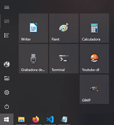
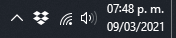

Windows
| screenshot |
| selection to clipboard |
windows + shift + s |
| window to clipboard |
alt + print |
Linux
| screenshot |
| selection to clipboard |
ctrl + shift + print |
| selection to pictures |
shift + print |
| window to pictures |
alt + print |
| text |
| unicode |
ctrl + shift + u |
| delete line |
ctrl + u |
| system |
| new terminal |
ctrl + alt + t |
# Open in current dir
code .
| Shortcuts |
| Select all ocurrences |
Ctrl + Shift + l |
| Fold all regions |
Ctrl + 1 |
| Unfold all regions |
Ctrl + 2 |
| Format document |
Ctrl + Q |
Extensions
- Live Server
- SCSS Formater
- Remote WSL
Programs
Settings
- Sistema
- Inicio/apagado y suspensión
- Pantalla = 10 minutos
- Suspender = Nunca
- Portapapeles
- Historial del Portapapeles = Desactivado
- Acerca de
- Cambiar el nombre de este equipo
- Dispositivos
- Reproducción automática = Abrir
- Peronalización
- Fondo
- Colores
- Pantalla de bloqueo
- Inicio
- Barra de tareas
- Aplicaciones
- Aplicaciones y características
- Cuentas
- Hora e idioma
- Fecha y hora = Sincronizar ahora
- Juegos
- Xbox Game Bar = Desactivado
- Búsqueda
- Búsqueda de contenido en la nube (Todo) = Desactivado
- Historial = Desactivado
- Privacidad
- Permisos de Windows (Todo) = Desactivado
- Actualización y seguridad
- Optimización de distribución = Desactivado
Preferences


| Sans |
Arial |
| Serif |
Cambria |
| Code |
Consolas Mono |
- Download
youtube-dl.exe
- Install
Visual C++ 2010 x86
- Download
FFmpeg release essentials
- Create Youtube-dl directory in C
- Copy inside Youtube-dl directory:
- Put C:\Youtube-dl in PATH
- Put youtube-dl.conf in C:\Users\James
- Assign icon to Youtube-dl.lnk
- Put Youtube-dl.lnk in Start menu
- Windows Subsystem for Linux
- GNU/Linux environment for Windows
WSL2
Windows Terminal
VSCode
-
Install VSCode
- Windows side
- Install extension: Remote - WSL
- Run code . in ~/project
Quick Access: Working directory
- Run explorer.exe . in /homes/james/
Update Git